How to create Amazon Lex chatbot
What is Amaxon Lex?
Amazon Lex is an AWS service for building conversational interfaces for applications using voice and text. With Amazon Lex, the same conversational engine that powers Amazon Alexa is now available to any developer, enabling you to build sophisticated, natural language chatbots into your new and existing applications. Amazon Lex provides the deep functionality and flexibility of natural language understanding (NLU) and automatic speech recognition (ASR) so you can build highly engaging user experiences with lifelike, conversational interactions, and create new categories of products.
Amazon Lex enables any developer to build conversational chatbots quickly. With Amazon Lex, no deep learning expertise is necessary—to create a bot, you just specify the basic conversation flow in the Amazon Lex console. Amazon Lex manages the dialogue and dynamically adjusts the responses in the conversation. Using the console, you can build, test, and publish your text or voice chatbot. You can then add the conversational interfaces to bots on mobile devices, web applications, and chat platforms (for example, Facebook Messenger).
Amazon Lex provides pre-built integration with AWS Lambda, and you can easily integrate with many other services on the AWS platform, including Amazon Cognito, AWS Mobile Hub, Amazon CloudWatch, and Amazon DynamoDB. Integration with Lambda provides bots access to pre-built serverless enterprise connectors to link to data in SaaS applications, such as Salesforce, HubSpot, or Marketo.
How does that look in practice?
Create AWS Lex Bot.
Open Amazon Lex on AWS.
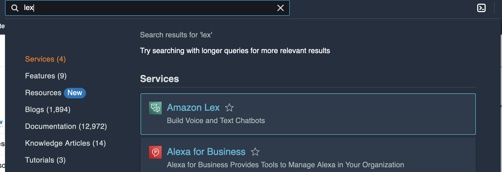Click on create bot.
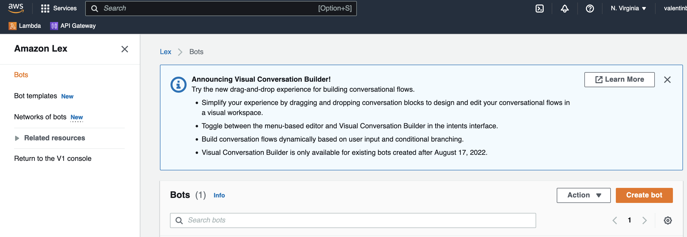Fill Bot name, choose "Create a role with basic Amazon Lex permissions" in IAM permissions, choose "No" in COPPA then click next.
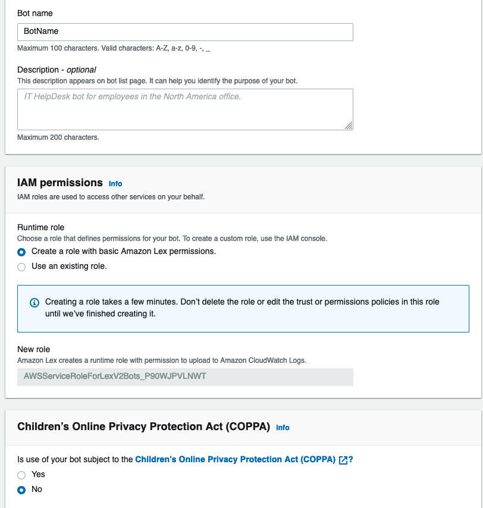On "Step 2 Add language to bot" just click on Done. It will redirect you to the Intent creation.
What is the intent?
An intent represents an action that the user wants to perform.
In the "Sample utterances" add your expected requests/questions from the user.
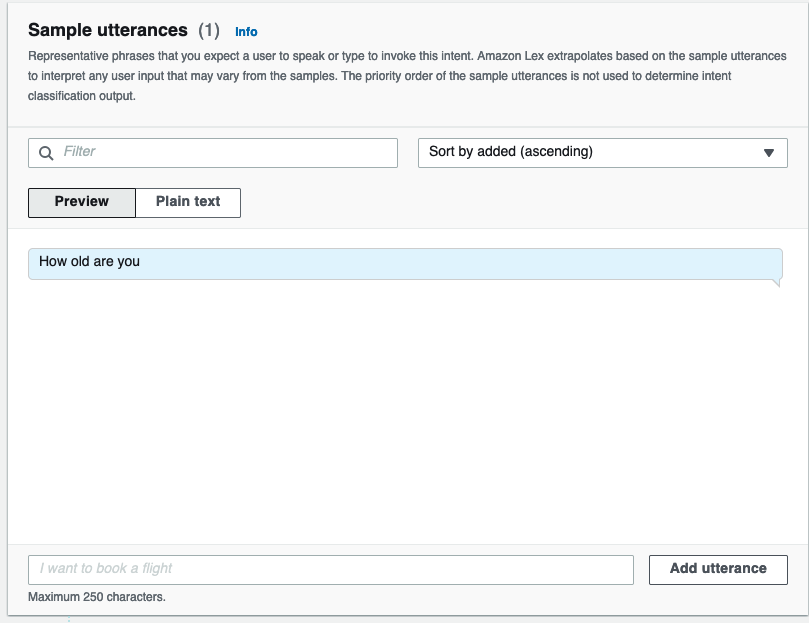In the "Initial response" add your expected response. In the "Variations" you can give multiple possible answers.
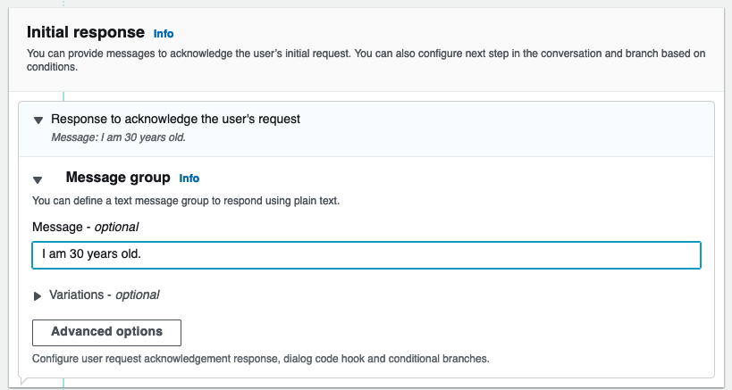Click on build on the top right corner. It will take some time.
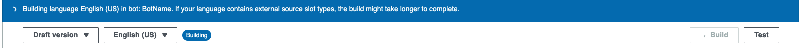When you see the green "Successfully built language English (US) in bot" then you can click on test and you can ask your test question.
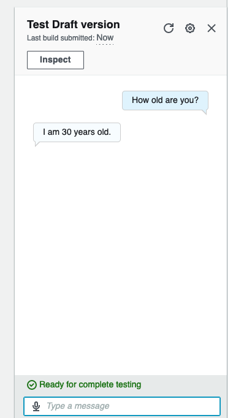When you finished your intent configuration go to the "Bot versions" tab.
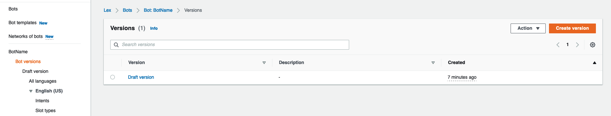Click on "Create version" where you can click on "Create".
Now we have almost everything from AWS side. We just need a new IAM role to integrate our bot.
Go to IAM/Users on AWS. Click on "Add users" and create a user with the following settings:
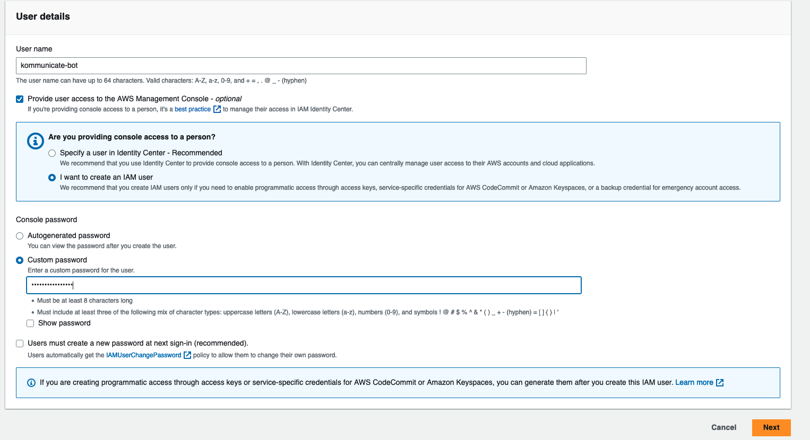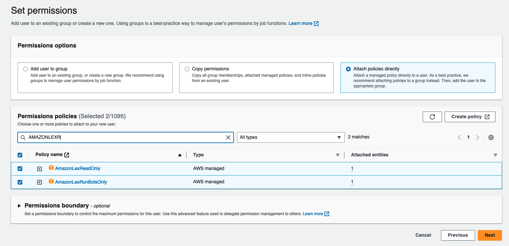
When we have the user let open it and go to "Security credentials" and create "Access keys".
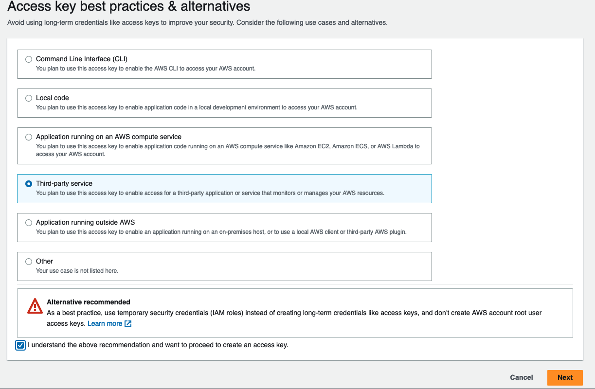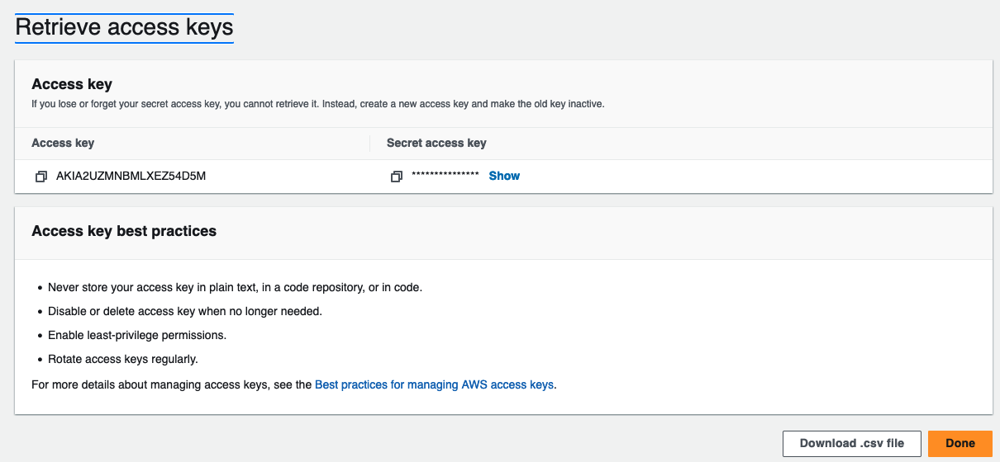
We will use the above generated Acces key and Secret acces key in the next steps.
Integrate AWS Lex with our website
Create integration with kommunicate
Go to the https://www.kommunicate.io/ page. Create a new account. Do the "Customize your chat widget" part.
On the "Add a chatbot to automate your customer conversations" part select Amazon Lex. Then select LexV2 and use the above created Acces Key ID and Secret access key.
Name your bot and choose a photo for it.
On the next page leave the human handoff disable.
Go back to the dashboard and open the "Install Kommunicate’s chat widget on your website or app" part. There will be some javascript code what you need to copy and paste to your website's body.
Thats all you need to use your Amazon Lex Bot on your webpage.